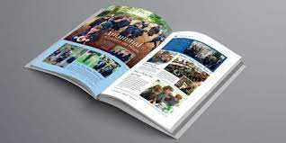
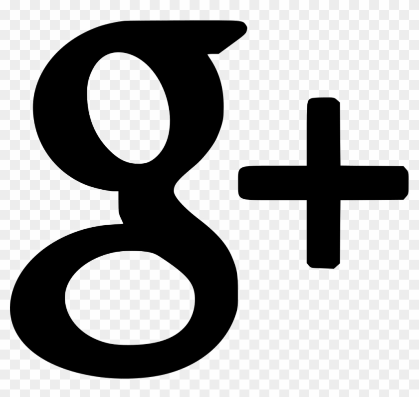
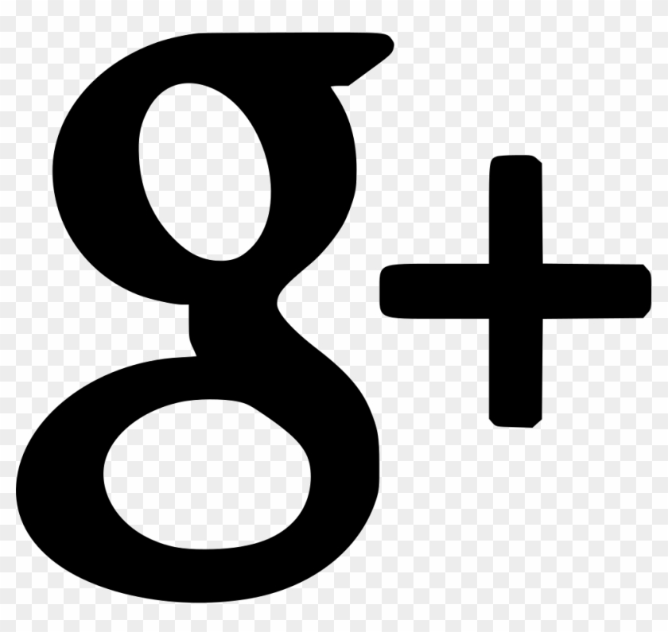

FEATURED ARTICLE
Nordstrom Launches Women's Fashion
By Brain Gardner -- Leave a comment
This ia an example of Wordpress post you could edit this to put information about yourself or your site so readers know where you are coming from. you can create as many posts as you like in order to share with your mind. This is an example of a Wordpress post, you could edit... ia an example of Wordpress post you could edit this to put information about yourself or your site so readers know where you are coming from. you can create as many posts as you like in order to share with your mind. This is an example of a Wordpress post, you could edit This ia an example of Wordpress post you could edit this to put information about yourself or your site so readers know where you are coming from. you can create as many posts as you like in order to share with your mind. This is an example of a Wordpress post, you could edit This ia an example of Wordpress post you could edit this to put information about yourself or your site so readers know where you are coming from. you can create as many posts as you like in order to share with your mind. This is an example of a Wordpress post, you could edit

 
